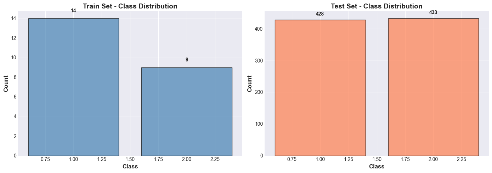
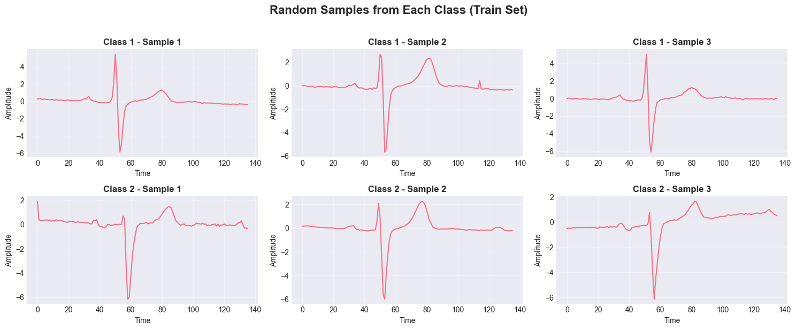
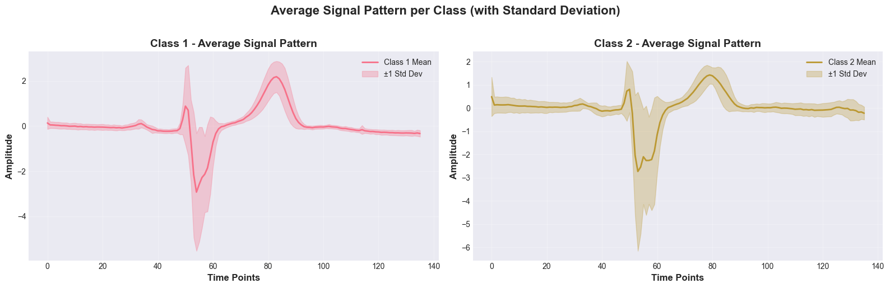
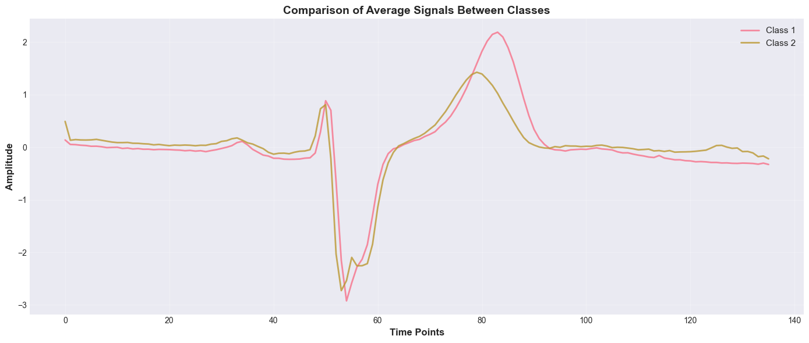
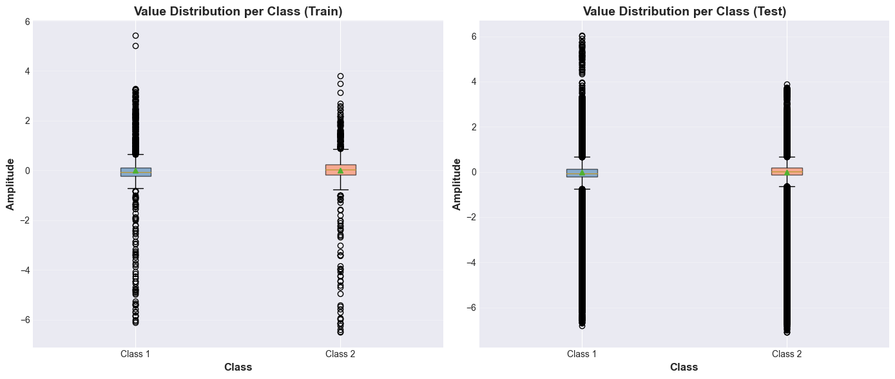
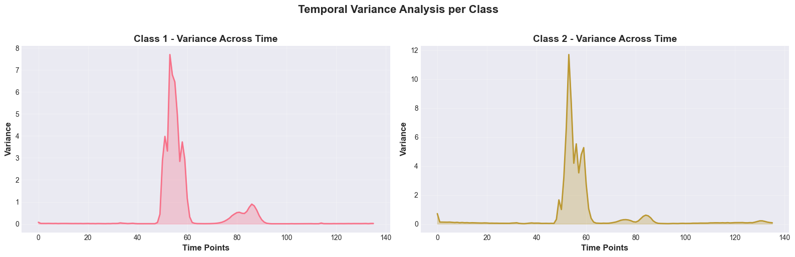
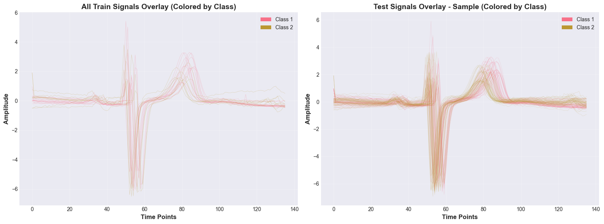

Data Understanding - ECGFiveDays Dataset#
Tujuan Notebook:#
Memahami struktur dan karakteristik dataset ECGFiveDays
Melakukan exploratory data analysis (EDA) komprehensif
Mengidentifikasi insight untuk tahap preprocessing
Mendeteksi potensi masalah (noise, outliers, imbalance)
Dataset: ECGFiveDays dari UCR Time Series Classification Archive
1. Setup & Imports#
import numpy as np
import pandas as pd
import matplotlib.pyplot as plt
import seaborn as sns
from pathlib import Path
import warnings
# Plotting configuration
plt.style.use('seaborn-v0_8-darkgrid')
sns.set_palette("husl")
warnings.filterwarnings('ignore')
# Set random seed for reproducibility
np.random.seed(42)
print("✓ Libraries imported successfully")
✓ Libraries imported successfully
Library yang digunakan:
NumPy & Pandas: Manipulasi data numerik dan tabular
Matplotlib & Seaborn: Visualisasi data
Pathlib: Path management yang cross-platform
Warnings: Suppress warning messages untuk output yang bersih
2. Define Helper Functions#
Tujuan: Membuat fungsi reusable untuk loading dataset UCR format
def load_ucr_dataset(filepath):
"""
Load UCR time series dataset from txt/arff/ts file.
Parameters:
-----------
filepath : str or Path
Path to the dataset file
Returns:
--------
X : numpy array
Time series data (n_samples, n_timepoints)
y : numpy array
Labels (n_samples,)
"""
filepath = Path(filepath)
if filepath.suffix == '.txt':
# UCR .txt format: first column is label, rest are time series values
data = np.loadtxt(filepath)
y = data[:, 0].astype(int)
X = data[:, 1:]
elif filepath.suffix == '.arff':
# ARFF format - parse manually
with open(filepath, 'r') as f:
lines = f.readlines()
# Find @data section
data_start = None
for i, line in enumerate(lines):
if line.strip().lower() == '@data':
data_start = i + 1
break
if data_start is None:
raise ValueError("Could not find @data section in ARFF file")
# Parse data
data_lines = [line.strip() for line in lines[data_start:] if line.strip()]
data = []
for line in data_lines:
values = line.split(',')
data.append([float(v) for v in values])
data = np.array(data)
y = data[:, -1].astype(int) # Last column is label in ARFF
X = data[:, :-1]
elif filepath.suffix == '.ts':
# TS format - sktime format
# Simple implementation for univariate series
data = []
labels = []
with open(filepath, 'r') as f:
for line in f:
if line.strip() and not line.startswith('@'):
parts = line.strip().split(':')
if len(parts) >= 2:
label = parts[0]
series = [float(x) for x in parts[1].split(',') if x.strip()]
data.append(series)
labels.append(label)
X = np.array(data)
y = np.array(labels).astype(int)
else:
raise ValueError(f"Unsupported file format: {filepath.suffix}")
return X, y
print("✓ Helper functions defined")
✓ Helper functions defined
Fungsi utama: load_ucr_dataset(filepath) Fungsi ini mendukung 3 format file UCR:
.txt format: Label di kolom pertama, values di kolom sisanya
.arff format: Weka ARFF dengan section @data
.ts format: sktime format untuk time series
Return:
X: numpy array dengan shape (n_samples, n_timepoints)
y: numpy array dengan shape (n_samples,) berisi label
Keunggulan:
Robust terhadap berbagai format
Error handling yang jelas
Consistent output format
3. Load Dataset#
Define dataset paths#
DATA_DIR = Path('ECGFiveDays')
TRAIN_FILE = DATA_DIR / 'ECGFiveDays_TRAIN.txt'
TEST_FILE = DATA_DIR / 'ECGFiveDays_TEST.txt'
# Check if files exist
if not TRAIN_FILE.exists():
raise FileNotFoundError(f"Train file not found: {TRAIN_FILE}")
if not TEST_FILE.exists():
raise FileNotFoundError(f"Test file not found: {TEST_FILE}")
print(f"✓ Dataset directory found: {DATA_DIR}")
print(f"✓ Train file: {TRAIN_FILE.name}")
print(f"✓ Test file: {TEST_FILE.name}")
✓ Dataset directory found: ECGFiveDays
✓ Train file: ECGFiveDays_TRAIN.txt
✓ Test file: ECGFiveDays_TEST.txt
Load train and test data#
X_train, y_train = load_ucr_dataset(TRAIN_FILE)
X_test, y_test = load_ucr_dataset(TEST_FILE)
print("=" * 60)
print("DATASET LOADED SUCCESSFULLY")
print("=" * 60)
print(f"Train set shape: {X_train.shape}")
print(f"Test set shape: {X_test.shape}")
print(f"Train labels shape: {y_train.shape}")
print(f"Test labels shape: {y_test.shape}")
============================================================
DATASET LOADED SUCCESSFULLY
============================================================
Train set shape: (23, 136)
Test set shape: (861, 136)
Train labels shape: (23,)
Test labels shape: (861,)
4. Basic Dataset Information#
Tujuan: Mendapatkan overview high-level tentang dataset.
Create summary dataframe#
summary_data = {
'Metric': [
'Number of training samples',
'Number of test samples',
'Total samples',
'Time series length',
'Number of classes',
'Train/Test ratio'
],
'Value': [
X_train.shape[0],
X_test.shape[0],
X_train.shape[0] + X_test.shape[0],
X_train.shape[1],
len(np.unique(y_train)),
f"{X_train.shape[0]}/{X_test.shape[0]} ({X_train.shape[0]/X_test.shape[0]:.3f})"
]
}
summary_df = pd.DataFrame(summary_data)
print("\n" + "=" * 60)
print("DATASET SUMMARY")
print("=" * 60)
print(summary_df.to_string(index=False))
============================================================
DATASET SUMMARY
============================================================
Metric Value
Number of training samples 23
Number of test samples 861
Total samples 884
Time series length 136
Number of classes 2
Train/Test ratio 23/861 (0.027)
Check unique classes#
unique_train = np.unique(y_train)
unique_test = np.unique(y_test)
print("\n" + "=" * 60)
print("CLASS INFORMATION")
print("=" * 60)
print(f"Unique classes in train: {unique_train}")
print(f"Unique classes in test: {unique_test}")
print(f"Class consistency: {'✓ PASS' if np.array_equal(unique_train, unique_test) else '✗ FAIL'}")
============================================================
CLASS INFORMATION
============================================================
Unique classes in train: [1 2]
Unique classes in test: [1 2]
Class consistency: ✓ PASS
5. Class Distribution Analysis#
Tujuan: Mendapatkan overview high-level tentang dataset.
Calculate class distribution#
train_counts = pd.Series(y_train).value_counts().sort_index()
test_counts = pd.Series(y_test).value_counts().sort_index()
distribution_df = pd.DataFrame({
'Class': train_counts.index,
'Train Count': train_counts.values,
'Train %': (train_counts.values / len(y_train) * 100).round(2),
'Test Count': test_counts.values,
'Test %': (test_counts.values / len(y_test) * 100).round(2)
})
print("\n" + "=" * 60)
print("CLASS DISTRIBUTION")
print("=" * 60)
print(distribution_df.to_string(index=False))
============================================================
CLASS DISTRIBUTION
============================================================
Class Train Count Train % Test Count Test %
1 14 60.87 428 49.71
2 9 39.13 433 50.29
Visualize class distribution#
fig, axes = plt.subplots(1, 2, figsize=(14, 5))
# Train distribution
axes[0].bar(train_counts.index, train_counts.values, color='steelblue', alpha=0.7, edgecolor='black')
axes[0].set_xlabel('Class', fontsize=12, fontweight='bold')
axes[0].set_ylabel('Count', fontsize=12, fontweight='bold')
axes[0].set_title('Train Set - Class Distribution', fontsize=14, fontweight='bold')
axes[0].grid(axis='y', alpha=0.3)
for i, v in enumerate(train_counts.values):
axes[0].text(train_counts.index[i], v + 0.5, str(v), ha='center', va='bottom', fontweight='bold')
# Test distribution
axes[1].bar(test_counts.index, test_counts.values, color='coral', alpha=0.7, edgecolor='black')
axes[1].set_xlabel('Class', fontsize=12, fontweight='bold')
axes[1].set_ylabel('Count', fontsize=12, fontweight='bold')
axes[1].set_title('Test Set - Class Distribution', fontsize=14, fontweight='bold')
axes[1].grid(axis='y', alpha=0.3)
for i, v in enumerate(test_counts.values):
axes[1].text(test_counts.index[i], v + 10, str(v), ha='center', va='bottom', fontweight='bold')
plt.tight_layout()
plt.show()
# Check balance
imbalance_ratio_train = train_counts.max() / train_counts.min()
imbalance_ratio_test = test_counts.max() / test_counts.min()
print(f"\nImbalance Ratio (Train): {imbalance_ratio_train:.2f}")
print(f"Imbalance Ratio (Test): {imbalance_ratio_test:.2f}")
print(f"Balance Status: {'✓ Balanced' if imbalance_ratio_train < 1.5 else '⚠ Imbalanced'}")

Imbalance Ratio (Train): 1.56
Imbalance Ratio (Test): 1.01
Balance Status: ⚠ Imbalanced
Analisis yang dilakukan:
Hitung distribusi absolute - berapa sample per kelas
Hitung distribusi relatif (%) - persentase per kelas
Visualisasi bar chart - perbandingan visual
Hitung imbalance ratio - max_count / min_count
6. Data Quality Check#
Tujuan: Memastikan data dalam kondisi baik untuk modeling.
Check for missing values#
train_missing = np.isnan(X_train).sum()
test_missing = np.isnan(X_test).sum()
print("=" * 60)
print("DATA QUALITY CHECK")
print("=" * 60)
print(f"Missing values in train: {train_missing}")
print(f"Missing values in test: {test_missing}")
print(f"Missing values status: {'✓ PASS - No missing values' if train_missing == 0 and test_missing == 0 else '✗ FAIL - Contains missing values'}")
============================================================
DATA QUALITY CHECK
============================================================
Missing values in train: 0
Missing values in test: 0
Missing values status: ✓ PASS - No missing values
Check for infinite values#
train_inf = np.isinf(X_train).sum()
test_inf = np.isinf(X_test).sum()
print(f"\nInfinite values in train: {train_inf}")
print(f"Infinite values in test: {test_inf}")
print(f"Infinite values status: {'✓ PASS - No infinite values' if train_inf == 0 and test_inf == 0 else '✗ FAIL - Contains infinite values'}")
Infinite values in train: 0
Infinite values in test: 0
Infinite values status: ✓ PASS - No infinite values
Check data types and value ranges#
print(f"\nData type (train): {X_train.dtype}")
print(f"Data type (test): {X_test.dtype}")
print(f"\nValue range (train): [{X_train.min():.4f}, {X_train.max():.4f}]")
print(f"Value range (test): [{X_test.min():.4f}, {X_test.max():.4f}]")
Data type (train): float64
Data type (test): float64
Value range (train): [-6.5112, 5.4211]
Value range (test): [-7.1078, 6.0328]
7. Statistical Summary#
Calculate statistics per dataset#
stats_train = {
'Mean': np.mean(X_train),
'Median': np.median(X_train),
'Std Dev': np.std(X_train),
'Min': np.min(X_train),
'Max': np.max(X_train),
'Q25': np.percentile(X_train, 25),
'Q75': np.percentile(X_train, 75)
}
stats_test = {
'Mean': np.mean(X_test),
'Median': np.median(X_test),
'Std Dev': np.std(X_test),
'Min': np.min(X_test),
'Max': np.max(X_test),
'Q25': np.percentile(X_test, 25),
'Q75': np.percentile(X_test, 75)
}
stats_df = pd.DataFrame({
'Statistic': stats_train.keys(),
'Train': [f"{v:.4f}" for v in stats_train.values()],
'Test': [f"{v:.4f}" for v in stats_test.values()]
})
print("\n" + "=" * 60)
print("STATISTICAL SUMMARY (ALL DATA)")
print("=" * 60)
print(stats_df.to_string(index=False))
============================================================
STATISTICAL SUMMARY (ALL DATA)
============================================================
Statistic Train Test
Mean 0.0000 0.0000
Median -0.0339 -0.0266
Std Dev 0.9963 0.9963
Min -6.5112 -7.1078
Max 5.4211 6.0328
Q25 -0.2030 -0.1799
Q75 0.1835 0.1698
8. Visualize Random Samples#
Plot random samples from each class#
n_samples = 3
classes = np.unique(y_train)
fig, axes = plt.subplots(len(classes), n_samples, figsize=(15, 6))
for i, cls in enumerate(classes):
# Get indices for this class
indices = np.where(y_train == cls)[0]
random_indices = np.random.choice(indices, size=min(n_samples, len(indices)), replace=False)
for j, idx in enumerate(random_indices):
ax = axes[i, j] if len(classes) > 1 else axes[j]
ax.plot(X_train[idx], linewidth=1.5)
ax.set_title(f'Class {cls} - Sample {j+1}', fontweight='bold')
ax.set_xlabel('Time')
ax.set_ylabel('Amplitude')
ax.grid(True, alpha=0.3)
plt.suptitle('Random Samples from Each Class (Train Set)', fontsize=16, fontweight='bold', y=1.02)
plt.tight_layout()
plt.show()

9. Average Signal per Class#
Calculate mean and std for each class#
fig, axes = plt.subplots(1, 2, figsize=(16, 5))
for i, cls in enumerate(classes):
# Get all samples for this class
class_samples = X_train[y_train == cls]
# Calculate mean and std
mean_signal = np.mean(class_samples, axis=0)
std_signal = np.std(class_samples, axis=0)
# Plot on separate subplot
ax = axes[i]
time_points = np.arange(len(mean_signal))
ax.plot(time_points, mean_signal, linewidth=2, label=f'Class {cls} Mean', color=f'C{i}')
ax.fill_between(time_points,
mean_signal - std_signal,
mean_signal + std_signal,
alpha=0.3,
color=f'C{i}',
label=f'±1 Std Dev')
ax.set_xlabel('Time Points', fontsize=12, fontweight='bold')
ax.set_ylabel('Amplitude', fontsize=12, fontweight='bold')
ax.set_title(f'Class {cls} - Average Signal Pattern', fontsize=14, fontweight='bold')
ax.legend()
ax.grid(True, alpha=0.3)
plt.suptitle('Average Signal Pattern per Class (with Standard Deviation)',
fontsize=16, fontweight='bold', y=1.02)
plt.tight_layout()
plt.show()

Overlay comparison of mean signals#
plt.figure(figsize=(14, 6))
for cls in classes:
class_samples = X_train[y_train == cls]
mean_signal = np.mean(class_samples, axis=0)
plt.plot(mean_signal, linewidth=2, label=f'Class {cls}', alpha=0.8)
plt.xlabel('Time Points', fontsize=12, fontweight='bold')
plt.ylabel('Amplitude', fontsize=12, fontweight='bold')
plt.title('Comparison of Average Signals Between Classes', fontsize=14, fontweight='bold')
plt.legend(fontsize=11)
plt.grid(True, alpha=0.3)
plt.tight_layout()
plt.show()
print("\n💡 Insight: Perhatikan perbedaan pola antar kelas untuk memahami separability")

💡 Insight: Perhatikan perbedaan pola antar kelas untuk memahami separability
10. Statistical Analysis per Class#
Calculate statistics per class#
class_stats = []
for cls in classes:
class_data = X_train[y_train == cls]
stats = {
'Class': cls,
'N Samples': len(class_data),
'Mean': np.mean(class_data),
'Std': np.std(class_data),
'Min': np.min(class_data),
'Max': np.max(class_data),
'Median': np.median(class_data)
}
class_stats.append(stats)
class_stats_df = pd.DataFrame(class_stats)
print("\n" + "=" * 60)
print("STATISTICAL SUMMARY PER CLASS")
print("=" * 60)
print(class_stats_df.to_string(index=False))
============================================================
STATISTICAL SUMMARY PER CLASS
============================================================
Class N Samples Mean Std Min Max Median
1 14 -1.225788e-10 0.996317 -6.119792 5.421075 -0.067392
2 9 2.906863e-10 0.996317 -6.511159 3.806948 0.023753
11. Distribution Analysis - Box Plots#
# Create box plots for value distribution per class
fig, axes = plt.subplots(1, 2, figsize=(14, 6))
# Prepare data for box plots
data_by_class_train = [X_train[y_train == cls].flatten() for cls in classes]
data_by_class_test = [X_test[y_test == cls].flatten() for cls in classes]
# Train set box plot
bp1 = axes[0].boxplot(data_by_class_train, labels=[f'Class {cls}' for cls in classes],
patch_artist=True, showmeans=True)
axes[0].set_xlabel('Class', fontsize=12, fontweight='bold')
axes[0].set_ylabel('Amplitude', fontsize=12, fontweight='bold')
axes[0].set_title('Value Distribution per Class (Train)', fontsize=14, fontweight='bold')
axes[0].grid(axis='y', alpha=0.3)
# Color the boxes
colors = ['steelblue', 'coral']
for patch, color in zip(bp1['boxes'], colors):
patch.set_facecolor(color)
patch.set_alpha(0.6)
# Test set box plot
bp2 = axes[1].boxplot(data_by_class_test, labels=[f'Class {cls}' for cls in classes],
patch_artist=True, showmeans=True)
axes[1].set_xlabel('Class', fontsize=12, fontweight='bold')
axes[1].set_ylabel('Amplitude', fontsize=12, fontweight='bold')
axes[1].set_title('Value Distribution per Class (Test)', fontsize=14, fontweight='bold')
axes[1].grid(axis='y', alpha=0.3)
for patch, color in zip(bp2['boxes'], colors):
patch.set_facecolor(color)
patch.set_alpha(0.6)
plt.tight_layout()
plt.show()

12. Signal Variance Analysis#
# Calculate variance per time point for each class
fig, axes = plt.subplots(1, 2, figsize=(16, 5))
for i, cls in enumerate(classes):
class_samples = X_train[y_train == cls]
variance_per_timepoint = np.var(class_samples, axis=0)
ax = axes[i]
ax.plot(variance_per_timepoint, linewidth=2, color=f'C{i}')
ax.fill_between(range(len(variance_per_timepoint)), variance_per_timepoint,
alpha=0.3, color=f'C{i}')
ax.set_xlabel('Time Points', fontsize=12, fontweight='bold')
ax.set_ylabel('Variance', fontsize=12, fontweight='bold')
ax.set_title(f'Class {cls} - Variance Across Time', fontsize=14, fontweight='bold')
ax.grid(True, alpha=0.3)
plt.suptitle('Temporal Variance Analysis per Class', fontsize=16, fontweight='bold', y=1.02)
plt.tight_layout()
plt.show()
print("\n💡 Insight: Time points dengan variance tinggi mungkin lebih informatif untuk klasifikasi")

💡 Insight: Time points dengan variance tinggi mungkin lebih informatif untuk klasifikasi
13. Outlier Detection#
# Detect potential outliers using IQR method
def detect_outliers_iqr(data, multiplier=1.5):
"""Detect outliers using IQR method"""
q1 = np.percentile(data, 25)
q3 = np.percentile(data, 75)
iqr = q3 - q1
lower_bound = q1 - multiplier * iqr
upper_bound = q3 + multiplier * iqr
outliers = (data < lower_bound) | (data > upper_bound)
return outliers, lower_bound, upper_bound
# Check for outliers in train set
outliers_train, lb_train, ub_train = detect_outliers_iqr(X_train.flatten())
n_outliers_train = np.sum(outliers_train)
pct_outliers_train = (n_outliers_train / X_train.size) * 100
print("=" * 60)
print("OUTLIER ANALYSIS (IQR Method, multiplier=1.5)")
print("=" * 60)
print(f"Train set:")
print(f" - Total values: {X_train.size}")
print(f" - Outliers detected: {n_outliers_train} ({pct_outliers_train:.2f}%)")
print(f" - Lower bound: {lb_train:.4f}")
print(f" - Upper bound: {ub_train:.4f}")
# Check per class
print("\nOutliers per class (Train):")
for cls in classes:
class_data = X_train[y_train == cls]
outliers_cls, _, _ = detect_outliers_iqr(class_data.flatten())
n_outliers_cls = np.sum(outliers_cls)
pct_outliers_cls = (n_outliers_cls / class_data.size) * 100
print(f" Class {cls}: {n_outliers_cls} outliers ({pct_outliers_cls:.2f}%)")
============================================================
OUTLIER ANALYSIS (IQR Method, multiplier=1.5)
============================================================
Train set:
- Total values: 3128
- Outliers detected: 437 (13.97%)
- Lower bound: -0.7827
- Upper bound: 0.7633
Outliers per class (Train):
Class 1: 291 outliers (15.28%)
Class 2: 152 outliers (12.42%)
14. Signal Length Consistency Check#
# Verify all signals have same length
train_lengths = [len(signal) for signal in X_train]
test_lengths = [len(signal) for signal in X_test]
unique_train_lengths = np.unique(train_lengths)
unique_test_lengths = np.unique(test_lengths)
print("=" * 60)
print("SIGNAL LENGTH CONSISTENCY")
print("=" * 60)
print(f"Train - Unique lengths: {unique_train_lengths}")
print(f"Test - Unique lengths: {unique_test_lengths}")
print(f"Length consistency: {'✓ PASS - All signals have same length' if len(unique_train_lengths) == 1 and len(unique_test_lengths) == 1 else '✗ FAIL - Variable length signals detected'}")
============================================================
SIGNAL LENGTH CONSISTENCY
============================================================
Train - Unique lengths: [136]
Test - Unique lengths: [136]
Length consistency: ✓ PASS - All signals have same length
15. Class Separability - Visual Inspection#
# Plot all signals colored by class for visual separability check
fig, axes = plt.subplots(1, 2, figsize=(16, 6))
# Train set
for cls in classes:
class_samples = X_train[y_train == cls]
for sample in class_samples:
axes[0].plot(sample, alpha=0.3, linewidth=0.5, color=f'C{cls-1}')
axes[0].set_xlabel('Time Points', fontsize=12, fontweight='bold')
axes[0].set_ylabel('Amplitude', fontsize=12, fontweight='bold')
axes[0].set_title('All Train Signals Overlay (Colored by Class)', fontsize=14, fontweight='bold')
axes[0].grid(True, alpha=0.3)
# Add legend
from matplotlib.patches import Patch
legend_elements = [Patch(facecolor=f'C{i}', label=f'Class {cls}')
for i, cls in enumerate(classes)]
axes[0].legend(handles=legend_elements)
# Test set
for cls in classes:
class_samples = X_test[y_test == cls]
# Plot only subset for visibility
subset_size = min(50, len(class_samples))
subset_indices = np.random.choice(len(class_samples), subset_size, replace=False)
for idx in subset_indices:
axes[1].plot(class_samples[idx], alpha=0.2, linewidth=0.5, color=f'C{cls-1}')
axes[1].set_xlabel('Time Points', fontsize=12, fontweight='bold')
axes[1].set_ylabel('Amplitude', fontsize=12, fontweight='bold')
axes[1].set_title('Test Signals Overlay - Sample (Colored by Class)', fontsize=14, fontweight='bold')
axes[1].grid(True, alpha=0.3)
axes[1].legend(handles=legend_elements)
plt.tight_layout()
plt.show()
print("\n💡 Insight: Perhatikan overlap antar kelas - semakin besar overlap, semakin challenging klasifikasinya")

💡 Insight: Perhatikan overlap antar kelas - semakin besar overlap, semakin challenging klasifikasinya
16. Save Processed Insights#
# Save key statistics for later use
insights = {
'n_train': X_train.shape[0],
'n_test': X_test.shape[0],
'n_timepoints': X_train.shape[1],
'n_classes': len(classes),
'classes': classes.tolist(),
'train_class_distribution': train_counts.to_dict(),
'test_class_distribution': test_counts.to_dict(),
'value_range': [float(X_train.min()), float(X_train.max())],
'mean': float(np.mean(X_train)),
'std': float(np.std(X_train)),
'missing_values': int(train_missing),
'outlier_percentage': float(pct_outliers_train)
}
# Save to numpy for easy loading
np.save('eda_insights.npy', insights)
print("\n✓ EDA insights saved to 'eda_insights.npy'")
✓ EDA insights saved to 'eda_insights.npy'